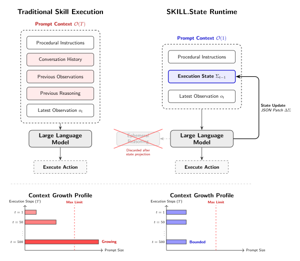

полный перевод научной статьи · arXiv:2608.26263v3
SKILL.state: Масштабируемые агентные навыки с длинным горизонтом выполнения
SKILL.state: Scalable Long-Horizon Agent Skills
1 Google LLC · 2 Purdue University
Корреспонденция: sanketbadhe@google.com
Аннотация
Большие языковые модели (LLMs) всё чаще выступают в роли автономных агентов, выполняющих сложные, длительно выполняемые процедурные навыки. Существующие среды выполнения (runtime) агентов поддерживают выполнение, непрерывно добавляя наблюдения, действия и промежуточные следы рассуждений во всё увеличивающуюся историю диалога, что вызывает ухудшение задержки и сбои из-за отравления контекста при длинных горизонтах выполнения. Мы представляем SKILL.state — архитектуру среды выполнения (runtime), которая заменяет историю диалога, доступную только для добавления, явным изменяемым состоянием выполнения. На каждом шаге выполнения модель получает только неизменяемую спецификацию навыка, текущее структурированное состояние выполнения и последнее наблюдение. Промежуточное рассуждение отбрасывается сразу после создания проверенного обновления состояния, предотвращая рост промпта вместе с историей выполнения. На различных наборах данных, моделях и средах выполнения SKILL.state повышает точность выполнения задач, одновременно существенно сокращая совокупное потребление токенов. Наши результаты демонстрируют, что явное состояние выполнения представляет собой эффективную, не зависящую от архитектуры абстракцию для масштабируемых навыков агентов с длинным горизонтом выполнения.
1 Введение
Большие языковые модели (LLMs) быстро эволюционировали от пассивных языковых интерфейсов в автономные системы, способные к итеративному рассуждению, использованию инструментов и взаимодействию с внешними средами (Yao et al., 2022; Schick et al., 2023; Qin et al., 2024; Wu et al., 2023). Недавние работы также демонстрируют, что эти возможности могут быть инкапсулированы в повторно используемые процедурные навыки, позволяющие агентам выполнять разработку программного обеспечения, автоматизацию рабочих процессов, взаимодействие с веб-средой и научные открытия посредством модульных композиций специализированных форм поведения (Badhe et al., 2026). По мере того как агенты всё чаще выполняют длительные процедуры, само выполнение становится проблемой систем, а не исключительно проблемой рассуждения.
Современные среды выполнения (runtime) агентов почти повсеместно используют диалоговую модель выполнения. На каждом шаге выполнения языковая модель получает исходную спецификацию навыка вместе с постоянно растущим транскриптом предыдущих рассуждений, действий, наблюдений и выводов инструментов (Yao et al., 2022; Mialon et al., 2023). Хотя системы памяти смягчают рост контекста посредством суммаризации или извлечения (Packer et al., 2023; Wang et al., 2023; Zhong et al., 2023), они сохраняют ту же семантику выполнения: будущие решения обусловливаются текстовыми реконструкциями прошлого выполнения вместо явного представления текущего состояния выполнения.
Такая конструкция вводит фундаментальные ограничения для процедурных навыков с длинным горизонтом выполнения. Размер промпта растёт вместе с длиной выполнения, увеличивая потребление токенов и стоимость инференса (Liu et al., 2024; Xiao et al., 2024a). Исторические наблюдения и устаревшее рассуждение остаются встроенными в контекст ещё долго после того, как перестают быть релевантными, требуя от модели постоянно отличать текущие факты от исторических артефактов. Следовательно, корректность выполнения всё больше зависит от восстановления состояния из накопленной текстовой истории.
В этой статье мы вводим SKILL.state, архитектуру среды выполнения (runtime), которая переформулирует выполнение процедурного навыка как явные переходы состояния вместо накопления истории диалога. Рисунок 1 представляет обзор предложенной среды выполнения (runtime). На шаге выполнения \(t\) языковая модель получает только три входа:
где \(P\) обозначает неизменяемую процедурную спецификацию, \(\Sigma_t\) — структурированное состояние выполнения, а \(O_t\) — последнее наблюдение среды. После создания проверенного обновления состояния промежуточный след рассуждений отбрасывается, и сохраняется только обновлённое состояние выполнения. Следовательно, выполнение строго зависит от текущего состояния мира вместо воспроизведения исторических траекторий.
Чтобы оценить эту гипотезу, мы оцениваем SKILL.state на синтетических и реальных бенчмарках: SkillExecBench, контролируемом бенчмарке, предназначенном для выполнения процедурных навыков с длинным горизонтом выполнения в условиях масштабирования, шума и восстановления состояния; InterCode CTF (Yang et al., 2023), включающем интерактивную эксплуатацию терминала Linux; и Sierra \(\tau\)-Bench (Yao et al., 2024), оценивающем многоходовые рабочие процессы обслуживания клиентов с использованием сложных API баз данных.
Экспериментальные результаты демонстрируют, что явное состояние выполнения существенно повышает масштабируемость процедурных навыков с длинным горизонтом выполнения, поддерживая ограниченный размер промпта, одновременно сокращая потребление токенов и превосходя базовые методы, основанные на истории и сжатии, для нескольких семейств моделей.
Наши вклады обобщены следующим образом:
- Мы предлагаем SKILL.state, архитектуру среды выполнения (runtime), которая выполняет процедурные навыки посредством явного структурированного состояния выполнения, при этом промежуточное рассуждение отбрасывается после каждого шага, доказывая строго ограниченный объём промпта \(\mathcal{O}(1)\) и совокупную сложность по токенам \(\mathcal{O}(T)\).
- Мы представляем SkillExecBench наряду с оценками на общедоступных бенчмарках (InterCode CTF и Sierra \(\tau\)-Bench) для оценки выполнения процедурных навыков с длинным горизонтом выполнения в последовательных средах, сохраняющих состояние.
- На нескольких горизонтах выполнения и среди базовых сред выполнения (runtime) мы демонстрируем, что выполнение, ориентированное на состояние, сохраняет конкурентоспособные результаты выполнения задач, одновременно существенно сокращая рост промпта и совокупное потребление токенов как для проприетарных моделей, так и для моделей с открытыми весами.
Приложение A. Промпты среды выполнения
В этом приложении приведены точные системные промпты, использованные четырьмя оцениваемыми средами выполнения. Для обеспечения воспроизводимости все промпты представлены в точности в том виде, в каком они динамически конструировались и форматировались в цикле выполнения бенчмарка.
A.1 Среда выполнения Prompt (стиль ReAct)
Instructions:
{skill.instructions}
History:
Observation: {history[0].observation}
Reasoning & Action: {history[0].response}
[... Appends all previous observations and actions ...]
Latest Observation: {observation}
Generate your next reasoning and action (format 'Action: <cmd>'):A.2 Среда выполнения с расширением памяти
Instructions:
{skill.instructions}
Summarized History:
{summary_string_of_past_steps}
Recent History:
Observation: {recent_observations[0]}
Response: {recent_responses[0]}
[... Appends the 3 most recent turns ...]
Latest Observation: {observation}
Generate your next reasoning and action (format 'Action: <cmd>'):A.3 Среда выполнения Stateful (стиль LangGraph)
Instructions:
{skill.instructions}
Current State:
{json.dumps(state, indent=2)}
History:
Observation: {history[0].observation}
Response: {history[0].response}
[... Appends all previous observations and actions ...]
Latest Observation: {observation}
Update the state if necessary, provide reasoning, and output 'Action: <cmd>'.
To update state, use the format: StateUpdate: {"key": "value"}A.4 Среда выполнения SKILL.state
Instructions:
{skill.instructions}
Skill Execution State:
```json
{json.dumps(state, separators=(',', ':'))}
Latest Observation: {observation}
Provide your response with:
1. Step-by-step reasoning (will be discarded after execution)
2. A JSON block fenced with json ... containing both your State Patch and your Action. The JSON block MUST have exactly these two keys: { "state_patch": { <dict: your state updates, set keys to null to delete> }, "action": "<string: the exact command you want to execute>" } Примечание: заполнитель {skill.instructions} динамически подставляет предметно-ориентированный системный промпт задачи (например, персону агента, доступное пространство действий и правила среды). Благодаря этому во всех оценках агент получает одни и те же базовые инструкции, а управление контекстом остаётся единственной независимой переменной.
Приложение B. Детали реализации SkillExecBench
Чтобы сосредоточить внимание на основных экспериментальных результатах в разделе 5, в этом приложении приведены полные детали реализации сред SkillExecBench, логика генерации задач и траектории эпизодов.
B.1 Проектирование сред
Среда 1: управление складом
- Представление состояния: дискретное отображение инвентаря для 500 независимых полок (например,
shelf_0–shelf_499), где каждая полка содержит ровно один строковый идентификатор товара или значениеnull. - Пространство действий:
Store <item_id> <empty_shelf_id>Ship <item_id> <shelf_id>Move <item_id> <old_shelf_id> <new_shelf_id>Wait
- Формат наблюдений: текстовые оповещения, вызываемые системными событиями, включая: Shipment arrived containing [item], Customer ordered [item] и Maintenance required on [shelf].
- Правила переходов: если агент вызывает
Store, среда проверяет, пуста ли полка, и только после этого размещает товар. Если вызываетсяShip, товар уничтожается. Некорректные действия (например, размещение товара на занятой полке) возвращают локальное наблюдение об ошибке и отклоняют переход состояния. - Критерий успеха: отношение успешно выполненных корректных действий, соответствующих детерминированной эталонной симуляции, к общему числу событий, требующих действия (Score = Successful Actions / Total Actionable Events).
Среда 2: программный репозиторий
- Представление состояния: имитируемый Git-репозиторий, отслеживающий истории веток, содержимое файлов, активные запросы на включение изменений (Pull Requests, PRs) и состояния тестов непрерывной интеграции (Continuous Integration, CI).
- Пространство действий:
Commit(branch, file),CreatePR(branch),Merge(pr_id),FixCI(branch),Wait. - Формат наблюдений: уведомления вебхуков CI/CD (например, CI Pipeline Failed for PR #3), комментарии к проверке кода и назначения задач.
- Правила переходов: отправка коммита запускает фоновый переход оценки CI. Успешное слияние PR переводит состояние основной ветки и удаляет ветку функции.
- Критерий успеха: доля корректно решённых запросов на функции, включённых в основную ветку без нарушения проверок CI.
B.2 Генерация задач
Задачи генерируются процедурно с использованием детерминированного генератора случайных чисел. За счёт инициализации генератора одним и тем же начальным значением все оцениваемые базовые среды выполнения получают в точности одну и ту же последовательность событий, что обеспечивает справедливое сравнение. Длина горизонта задаёт число последовательных событий, которые должен обработать агент.
seed ← 42
rng ← Random(seed)
gt_shelves ← { shelf_0: Null, ..., shelf_499: Null }
events ← []
for i = 1 to Horizon
available ← FindEmptyShelves(gt_shelves)
occupied ← FindOccupiedShelves(gt_shelves)
possible_events ← [Receive]
if occupied is not empty
possible_events.append(Order, Maintenance)
end if
event_type ← rng.choice(possible_events)
events.append(ConstructObservation(event_type))
UpdateGroundTruth(gt_shelves, event_type)
end for
return eventsB.3 Траектория примерного эпизода
Чтобы проиллюстрировать поток выполнения, ниже приведена конкретная одноходовая траектория для среды выполнения SKILL.state, работающей в складской среде.
1. Полученное наблюдение (среда → LLM)
Latest Observation:
Customer ordered item_12.Перевод: Последнее наблюдение: клиент заказал item_12.
2. Обработка LLM (внутренний процесс LLM)
Reasoning:
The customer ordered item_12. I need to ship it.
I will check my Skill Execution State to locate it.
Looking at the state schema, item_12 is located on shelf_42.
I must generate a Ship action and update my state to remove it from shelf_42.Перевод: клиент заказал item_12; его нужно отправить. Для определения местоположения следует проверить состояние выполнения навыка. Согласно схеме состояния item_12 находится на shelf_42. Нужно сгенерировать действие Ship и обновить состояние, удалив его с shelf_42.
3. Обновление состояния и генерация действия (LLM → среда выполнения)
{
"state_patch": {
"inventory": {
"shelf_42": null
}
},
"action": "Ship item_12 shelf_42"
}Перевод человекочитаемых полей: обновление состояния; действие «отправить item_12 с shelf_42». Имена ключей, значения и формат JSON сохранены буквально.
4. Следующее наблюдение (среда → LLM)
Latest Observation:
Success: Shipped item_12 from shelf_42. Перевод: успех: item_12 отправлен с shelf_42.
Приложение C. Конструирование шума (эксперимент 2)
В эксперименте 2 мы оцениваем устойчивость сред выполнения к плотному нерелевантному контекстному шуму. Реальные системы редко предоставляют чистые, идеально изолированные пространства наблюдений; агентам постоянно приходится фильтровать фоновую телеметрию, журналы датчиков и системный шум, чтобы выполнять свои инструкции.
Чтобы изолировать проблему Attention Drag, эксперименты в этой статье сосредоточены исключительно на условии 1: нерелевантный контекст.
C.1 Свойства шума
Для оценок по условию 1 в обеих средах внедряемые строки шума определяются тремя строгими свойствами:
- Генерируются случайно: такие значения, как проценты заряда батареи, температуры, идентификаторы серверов и загрузка CPU, равномерно выбираются случайно во время каждого шага выполнения.
- Строго нерелевантны: смысл шума совершенно не влияет на основную задачу агента (например, выполнение складских заказов или исправление CI-конвейеров).
- Не изменяют состояние: шумовые события никогда фактически не меняют истинное состояние мира. Это исключительно наблюдаемые отвлекающие факторы, добавляемые к ответу среды под заголовком
--- BACKGROUND TELEMETRY ---.
C.2 Отвлекающие факторы среды 1 (склад)
Чтобы смоделировать реалистичный зашумлённый склад, генератор случайно выбирает следующие категории для добавления нерелевантных строк в пространство наблюдений агента.
1. Журналы телеметрии роботов
Моделируют непрерывные сигналы от автоматизированных складских роботов, перемещающихся по полу.
Battery: 85%, Temperature: 45C, CPU Load: 72%,
Speed: 1.2 m/s, Nav Confidence: 95.4%2. Журналы датчиков окружающей среды
Моделируют пассивные показания HVAC и датчиков окружающей среды.
[Sensor] Humidity: 45%, Temp: 22.3C, Light: 310 lux, CO2: 450 ppm3. Журналы OCR / зрения камеры
Моделируют фоновые события от камер безопасности или систем компьютерного зрения, обнаруживающих объекты.
[Camera OCR] Forklift parked.
[Camera OCR] Worker entered Zone A.
[Camera OCR] Safety Vest Detected.C.3 Отвлекающие факторы среды 2 (программный репозиторий)
Чтобы смоделировать зашумлённую программную инженерную среду масштаба предприятия, генератор непрерывно добавляет в терминальные наблюдения агента нерелевантную телеметрию syslog облачной инфраструктуры.
Телеметрия syslog
Моделирует пассивные проверки работоспособности и предупреждения о загрузке CPU от отключённых удалённых серверов, работающих в фоновом режиме.
[Syslog] Server-42 CPU load: 88%, RAM usage: 71%
[Syslog] Server-17 CPU load: 12%, RAM usage: 45%
[Syslog] Server-91 CPU load: 99%, RAM usage: 89%Пример испорченного наблюдения (программный репозиторий, 3 события)
Latest Observation:
CI Pipeline Failed for PR #3. Linter error on line 42.
--- BACKGROUND TELEMETRY ---
[Syslog] Server-42 CPU load: 88%, RAM usage: 71%
[Syslog] Server-17 CPU load: 12%, RAM usage: 45%
[Syslog] Server-91 CPU load: 99%, RAM usage: 89%2 Связанные работы
2.1 Процедурные навыки для LLM-агентов
Существующие исследования повторно используемых процедурных навыков в основном посвящены обнаружению навыков, их представлению, композиции и моделированию угроз безопасности (Badhe et al., 2026; Badhe and Tiwari, 2026). Наша работа сосредоточена на в значительной степени неисследованных механизмах выполнения навыка после того, как навык выбран.
2.2 Архитектуры памяти для агентов с длинным горизонтом выполнения
Архитектуры агентов с длинным горизонтом выполнения обычно сохраняют семантику диалога посредством эпизодического извлечения (Park et al., 2023) или постоянного хранения (Chhikara et al., 2025; Zhong et al., 2024). Эти методы оставляют состояние выполнения неявно распределённым по накопленным журналам. SKILL.state изолирует выполнение в явном изменяемом состоянии среды выполнения (runtime), устраняя необходимость многократно восстанавливать модели мира из текстовой истории. Фреймворки, такие как LangGraph, используют вспомогательное структурированное состояние для оркестрации рабочих процессов между узлами агентов. Однако эти системы по-прежнему используют транскрипты диалогов как основной субстрат рассуждений. SKILL.state заменяет этот субстрат, отбрасывая промежуточные следы рассуждений сразу после создания проверенных переходов состояния.
2.3 Отслеживание состояния диалога
Отслеживание состояния диалога (DST) поддерживает значения слотов пользователя на протяжении ходов диалога в диалогах, ориентированных на выполнение задач (Williams et al., 2013; Henderson et al., 2014; Rastogi et al., 2020; Wu et al., 2019; Heck et al., 2020; Hosseini-Asl et al., 2020). Хотя и DST, и SKILL.state поддерживают структурированные представления, они фундаментально различаются по механике выполнения: DST отслеживает вспомогательное состояние наряду с полными транскриптами диалогов в квазистатичных диалогах, тогда как SKILL.state рассматривает структурированное состояние как достаточную статистику, отбрасывая историю диалога для выполнения автономных навыков в динамических средах с ограниченным объёмом промпта.
2.4 Управление контекстом и рассуждение в длинном контексте
Языковые модели демонстрируют ухудшенное извлечение информации из длинных контекстов (Liu et al., 2024; Zhang et al., 2024), что мотивирует потоковое внимание (Xiao et al., 2024b) и методы сжатия промпта (Jiang et al., 2023; Li et al., 2023). Вместо попыток обрабатывать или сжимать расширенные истории диалога SKILL.state полностью предотвращает накопление истории, поддерживая каноническое состояние выполнения, необходимое для следующего вычисления.
6 Заключение
Мы представили SKILL.state — архитектуру среды выполнения, которая заменяет историю диалога с добавлением только в конец явным структурированным состоянием выполнения. Отбрасывая промежуточные трассы рассуждений после каждого проверенного перехода, SKILL.state поддерживает ограниченный объём промпта \(\mathcal{O}(1)\) и масштабируется линейно, \(\mathcal{O}(T)\), по совокупному числу токенов. В контролируемых диагностических задачах и общедоступных интерактивных бенчмарках явное состояние выполнения стабильно повышает точность выполнения задач, одновременно существенно уменьшая рост промпта и потребление токенов.
7 Ограничения
SKILL.state предполагает, что состояние выполнения можно сделать достаточной статистикой для будущего выполнения: всё в прошлом, что имеет отношение к будущим действиям, может быть спроецировано в структурированное состояние сразу после того, как становится известным. Когда это выполняется, отбрасывание промежуточных рассуждений и истории диалога не приводит к потере информации. Однако это предположение нарушается в трёх различных случаях: (1) когда никакая фиксированная схема не известна заранее и релевантная структура состояния должна динамически обнаруживаться во время выполнения; (2) когда корректное обновление состояния зависит от более раннего наблюдения, релевантность которого не была распознана при первом наблюдении и поэтому никогда не была зафиксирована в состоянии; и (3) когда цель задачи определена самой исторической траекторией (например, аудитом, трассировкой происхождения при отладке или объяснением прошлых действий), и тогда история взаимодействия является целевым выходом вместо операционных накладных расходов.
Наша текущая реализация сосредоточена на процедурном выполнении одним агентом. Хотя абстракция явного состояния естественным образом распространяется на многоагентные системы — где общее состояние выполнения выступает центральной основой координации вместо обмена квадратичными стенограммами диалогов, — многоагентные среды вводят конкурентные записи, требующие детерминированной семантики разрешения конфликтов в операторе слияния \(\oplus\), которую наша одноагентная постановка не задействует.
Наконец, SKILL.state полагается на языковую модель, которая предлагает допустимые структурированные патчи состояния. Поскольку владение схемой и валидация находятся в детерминированной среде выполнения вместо модели, некорректно сформированные выходы не могут повредить постоянное состояние \(\Sigma_t\); недопустимый патч запускает цикл отката и повторной попытки. Для меньших моделей с открытыми весами интеграция декодирования с ограничениями грамматики может устранить синтаксические ошибки форматирования, позволяя модели полностью сосредоточиться на семантических переходах состояния.
Литература
- Badhe et al. (2026). S. Badhe, D. Shah, P. Tiwari, and N. Kathrotia. Систематический обзор навыков агентов: жизненный цикл, таксономия и безопасность. Taxonomy, and Security (July 31, 2026). ↩ §1 ↩ §2.1
- Badhe and Tiwari (2026). S. Badhe and P. Tiwari. Безопасность навыков агентов: модели угроз, атаки, защиты и оценивание. Preprint, arXiv:2607.13987. arXiv. ↩ §2.1
- Chhikara et al. (2025). P. Chhikara, D. Khant, S. Aryan, T. Singh, and D. Yadav. Mem0: создание готовых к производственному использованию ИИ-агентов с масштабируемой долговременной памятью. arXiv preprint arXiv:2504.19413. ↩ §2.2
- Heck et al. (2020). M. Heck, C. van Niekerk, N. Lubis, C. Geishauser, H. Lin, M. Moresi, and M. Gašić. TripPy: стратегия тройного копирования для независимого от значения отслеживания состояния нейронного диалога. In Proceedings of the 21th Annual Meeting of the Special Interest Group on Discourse and Dialogue, pp. 35–44. ↩ §2.3
- Henderson et al. (2014). M. Henderson, B. Thomson, and J. D. Williams. Второй конкурс по отслеживанию состояния диалога. In Proceedings of the 15th Annual Meeting of the Special Interest Group on Discourse and Dialogue (SIGDIAL), pp. 263–272. ↩ §2.3
- Hosseini-Asl et al. (2020). E. Hosseini-Asl, B. McCann, C. Wu, S. Yavuz, and R. Socher. Простая языковая модель для диалога, ориентированного на задачу. Advances in Neural Information Processing Systems 33, pp. 20179–20191. ↩ §2.3
- Jiang et al. (2023). H. Jiang, Q. Wu, C. Lin, Y. Yang, and L. Qiu. LLMLingua: сжатие промптов для ускоренного вывода больших языковых моделей. In Proceedings of the 2023 Conference on Empirical Methods in Natural Language Processing (EMNLP), pp. 13358–13376. ↩ §2.4 ↩ §5.1
- Li et al. (2023). Y. Li, B. Dong, F. Zhang, D. Wang, Y. Xu, X. Chen, and X. Ren. Сжатие контекста для повышения эффективности вывода больших языковых моделей. In Proceedings of the 2023 Conference on Empirical Methods in Natural Language Processing (EMNLP), pp. 6342–6353. ↩ §2.4
- Liu et al. (2024). N. F. Liu, K. Lin, J. Hewitt, A. Paranjape, M. Bevilacqua, F. Petroni, and P. Liang. Потерянные в середине: как языковые модели используют длинные контексты. Transactions of the Association for Computational Linguistics, 12, pp. 157–173. Внешние ссылки: ACL Anthology, DOI. ↩ §1 ↩ §2.4
- Mialon et al. (2023). G. Mialon, R. Dessi, M. Lomeli, C. Nalmpantis, R. Pasunuru, R. Raileanu, B. Roziere, T. Schick, J. Dwivedi-Yu, A. Celikyilmaz, E. Grave, Y. LeCun, and T. Scialom. Расширенные языковые модели: обзор. Transactions on Machine Learning Research. Note: Survey Certification. ISSN 2835-8856. OpenReview. ↩ §1
- Packer et al. (2023). C. Packer, V. Fang, S. Patil, K. Lin, S. Wooders, and J. Gonzalez. MemGPT: к LLM как к операционным системам. ↩ §1
- Park et al. (2023). J. S. Park, J. C. O’Brien, C. J. Cai, M. R. Morris, P. Liang, and M. S. Bernstein. Генеративные агенты: интерактивные симулякры человеческого поведения. In Proceedings of the 36th Annual ACM Symposium on User Interface Software and Technology (UIST). ↩ §2.2
- Qin et al. (2024). Y. Qin, S. Liang, Y. Ye, K. Zhu, L. Yan, Y. Lu, Y. Lin, X. Cong, X. Tang, B. Qian, et al. ToolLLM: содействие освоению большими языковыми моделями 16000+ реальных API. In International Conference on Learning Representations (ICLR). ↩ §1
- Rastogi et al. (2020). A. Rastogi, X. Zang, S. Sunkara, R. Gupta, and P. Khaitan. К масштабируемым многодоменным разговорным агентам: набор данных для диалога, управляемого схемой. In Proceedings of the AAAI Conference on Artificial Intelligence, vol. 34, pp. 8689–8696. ↩ §2.3
- Schick et al. (2023). T. Schick, J. Dwivedi-Yu, R. Dessì, R. Raileanu, M. Lomeli, L. Zettlemoyer, N. Cancedda, and T. Scialom. Toolformer: языковые модели могут научиться самостоятельно пользоваться инструментами. In Advances in Neural Information Processing Systems (NeurIPS). ↩ §1
- Wang et al. (2023). W. Wang, L. Dong, H. Cheng, X. Liu, X. Yan, J. Gao, and F. Wei. Дополнение языковых моделей долговременной памятью. Advances in Neural Information Processing Systems (NeurIPS). ↩ §1
- Williams et al. (2013). J. Williams, A. Raux, D. Ramachandran, and A. Black. Конкурс по отслеживанию состояния диалога. In Proceedings of the SIGDIAL 2013 Conference, pp. 404–413. ↩ §2.3
- Wu et al. (2019). C. Wu, A. Madotto, E. Hosseini-Asl, C. Xiong, R. Socher, and P. Fung. Переносимый генератор состояния для ориентированных на задачи диалоговых систем. In Proceedings of the 57th Annual Meeting of the Association for Computational Linguistics, pp. 808–819. ↩ §2.3
- Wu et al. (2023). Q. Wu, G. Bansal, J. Zhang, Y. Wu, B. Li, E. Zhu, L. Jiang, X. Zhang, S. Zhang, J. Liu, et al. AutoGen: создание приложений LLM нового поколения посредством многоагентного диалога. arXiv preprint arXiv:2308.08155. ↩ §1
- Xiao et al. (2024a). G. Xiao, Y. Tian, B. Chen, S. Han, and M. Lewis. Эффективные потоковые языковые модели со стоками внимания. In International Conference on Learning Representations (ICLR). ↩ §1
- Xiao et al. (2024b). G. Xiao, Y. Tian, B. Chen, S. Han, and M. Lewis. Эффективные потоковые языковые модели со стоками внимания. In International Conference on Learning Representations, vol. 2024, pp. 21875–21895. ↩ §2.4
- Yang et al. (2023). J. Yang, A. Prabhakar, K. Narasimhan, and S. Yao. InterCode: стандартизация и бенчмаркинг интерактивного программирования с обратной связью от выполнения. In Advances in Neural Information Processing Systems (NeurIPS). ↩ §1 ↩ §4.2
- Yao et al. (2024). S. Yao, N. Shinn, J. Zhao, Q. Wu, and K. Narasimhan. \(\tau\)-Bench: бенчмарк взаимодействия инструмента, агента и пользователя в реальных предметных областях. arXiv preprint arXiv:2406.12045. ↩ §1 ↩ §4.2
- Yao et al. (2022). S. Yao, J. Zhao, D. Yu, N. Du, I. Shafran, K. Narasimhan, and Y. Cao. React: синергия рассуждения и действия в языковых моделях. arXiv preprint arXiv:2210.03629. ↩ §1 ↩ §5.1
- Zhang et al. (2024). X. Zhang, Y. Chen, S. Hu, Z. Xu, J. Chen, M. Hao, X. Han, Z. Thai, S. Wang, Z. Liu, and M. Sun. \(\infty\)Bench: расширение оценки длинного контекста за пределы 100K токенов. In Proceedings of the 62nd Annual Meeting of the Association for Computational Linguistics (Volume 1: Long Papers), L. Ku, A. Martins, and V. Srikumar (Eds.), Bangkok, Thailand, pp. 15262–15277. Внешние ссылки: ACL Anthology, DOI. ↩ §2.4
- Zhong et al. (2023). W. Zhong, L. Guo, Q. Gao, H. Y. Wang, and Y. Lin. MemoryBank: расширение больших языковых моделей долговременной памятью. arXiv preprint arXiv:2305.10250. ↩ §1
- Zhong et al. (2024). W. Zhong, L. Guo, Q. Gao, H. Ye, and Y. Wang. Memorybank: расширение больших языковых моделей долговременной памятью. In Proceedings of the AAAI Conference on Artificial Intelligence, vol. 38, pp. 19724–19731. ↩ §2.2
4 Бенчмарки оценки
4.1 SkillExecBench (контролируемый диагностический тестовый стенд)
SkillExecBench отделяет механику выполнения от открытого эвристического поиска, предоставляя последовательные процедурные задачи с детерминированными эталонными переходами состояния мира:
- Среда 1 (Warehouse Management): дискретная предметная область физического инвентаря, отслеживающая 500 независимых полок. Действия включают
Store,Ship,MoveиWait. Эта среда проверяет способность модели поддерживать независимые, непересекающиеся переменные состояния на длительных горизонтах, когда ранние наблюдения выходят за пределы контекстного окна. - Среда 2 (Software Repository): глубоко вложенный реляционный граф ветвей Git, коммитов, Pull Requests и статусов CI-тестов. Действия включают
CherryPick,Merge,RunTests,CreateReleaseиRollback. Среда характеризуется плотными зависимостями, при которых одно действие (например, слияние PR) принципиально изменяет состояние целевой ветви и зависимых PR, проверяя сложное структурное рассуждение по запутанному графу.
4.2 Публичные интерактивные бенчмарки
Чтобы оценить SKILL.state на реальных недетерминированных задачах, требующих сложного поиска, генерации и использования инструментов, мы проводим оценку на двух публичных бенчмарках:
- InterCode CTF (Yang et al., 2023): набор из 100 задач Capture-The-Flag в Linux bash, охватывающих обратную разработку, компьютерную криминалистику, криптографию и эксплуатацию бинарных файлов. Агенты выполняют команды bash в контейнерах Docker и итеративно проверяют гипотезы, чтобы обнаружить скрытые флаги.
- Sierra \(\tau\)-Bench (Yao et al., 2024): бенчмарк взаимодействия «инструмент—агент—пользователь» в корпоративном обслуживании клиентов (домены Retail и Airline). Агенты взаимодействуют с симулированными пользователями, запрашивают реляционные базы данных SQLite посредством вызовов инструментов и выполняют транзакционные действия (например, перебронирование рейсов, возвраты) с учётом ограничений бизнес-политик.
4.3 Метрики оценки
Мы оцениваем среды выполнения по трём измерениям:
- Точность выполнения задачи / коэффициент успешности: в SkillExecBench точность непрерывно измеряется как отношение числа допустимых корректных действий, соответствующих детерминированной эталонной симуляции (\(\text{Score}=\frac{\text{Successful Actions}}{\text{Total Actionable Events}}\)). В InterCode CTF успешность является бинарным показателем pass@1 (точное совпадение с бинарно проверенным флагом). В \(\tau\)-Bench успешность оценивается официальным программным оценивателем, который проверяет, что итоговое состояние базы данных удовлетворяет намерению пользователя без нарушений политик.
- Средний размер промпта: средняя длина строки в символах для одного вызова LLM.
- Общая стоимость токенов: совокупный расход токенов на протяжении всего горизонта выполнения.
| Горизонт (\(T\)) | Среда выполнения | Оценка (точность) | Средний промпт (символы) | Всего токенов |
|---|---|---|---|---|
| 10 | Prompt (ReAct) | 0.90 ± 0.02 | 3,249 ± 94 | 9,438 ± 371 |
| Memory (Summary) | 1.00 ± 0.00 | 3,300 ± 123 | 9,972 ± 204 | |
| Stateful (LangGraph) | 1.00 ± 0.00 | 3,430 ± 42 | 10,337 ± 299 | |
| SKILL.state | 1.00 ± 0.00 | 1,775 ± 74 | 5,870 ± 131 | |
| 25 | Prompt (ReAct) | 0.92 ± 0.02 | 6,052 ± 192 | 42,689 ± 2,238 |
| Memory (Summary) | 0.99 ± 0.00 | 6,357 ± 203 | 43,067 ± 1,948 | |
| Stateful (LangGraph) | 1.00 ± 0.00 | 5,858 ± 301 | 41,238 ± 3,196 | |
| SKILL.state | 1.00 ± 0.00 | 1,736 ± 49 | 14,714 ± 564 | |
| 50 | Prompt (ReAct) | 0.88 ± 0.04 | 11,931 ± 346 | 171,658 ± 6,978 |
| Memory (Summary) | 0.93 ± 0.03 | 7,582 ± 283 | 131,455 ± 6,841 | |
| Stateful (LangGraph) | 0.94 ± 0.00 | 11,594 ± 438 | 170,992 ± 7,918 | |
| SKILL.state | 0.96 ± 0.01 | 1,773 ± 53 | 30,151 ± 1,231 | |
| 100 | Prompt (ReAct) | 0.84 ± 0.07 | 36,362 ± 1,304 | 1,245,413 ± 53,241 |
| Memory (Summary) | 0.87 ± 0.05 | 29,607 ± 978 | 1,082,154 ± 83,212 | |
| Stateful (LangGraph) | 0.91 ± 0.02 | 31,354 ± 831 | 1,062,387 ± 53,839 | |
| SKILL.state | 0.94 ± 0.01 | 1,905 ± 93 | 65,408 ± 5,431 | |
| 200 | Prompt (ReAct) | 0.74 ± 0.14 | 48,007 ± 2,092 | 2,608,755 ± 102,415 |
| Memory (Summary) | 0.84 ± 0.09 | 84,364 ± 3,446 | 6,175,509 ± 294,089 | |
| Stateful (LangGraph) | 0.88 ± 0.03 | 72,305 ± 3,096 | 5,041,164 ± 346,925 | |
| SKILL.state | 0.94 ± 0.02 | 1,811 ± 184 | 122,384 ± 4,522 |
5 Эксперименты и результаты
5.1 Настройка эксперимента
Мы оцениваем SKILL.state в сравнении с двумя семействами базовых методов (точные шаблоны промптов см. в Приложении A. Промпты среды выполнения):
Основные парадигмы среды выполнения:
- Prompt (ReAct-style): добавляет каждое наблюдение, промежуточную трассу рассуждений и действие в постоянно растущий транскрипт (Yao et al., 2022).
- Memory (Summarization-style): поддерживает скользящее окно диалога из 3 шагов наряду с периодически обновляемым резюме прошлых взаимодействий на естественном языке.
- Stateful (LangGraph-style): вставляет структурированный блок состояния в контекстное окно вместе с полным скользящим транскриптом диалога.
Контроли с сопоставимым бюджетом и сжатием:
- Truncated (Sliding Window): сохраняет только самые недавние ходы взаимодействия, которые помещаются в фиксированный бюджет токенов.
- Summary-capped: строго устанавливает жёсткий предел токенов для резюме на естественном языке.
- ReAct + LLMLingua (Jiang et al., 2023): использует сжатие на основе перплексии малой модели с учётом бюджета, чтобы удалить токены из полной истории до целевого бюджета.
Используемые модели: оценки проводятся на проприетарных моделях и моделях с открытыми весами: Gemini-3-Flash, Gemma-4-31B-it и Qwen-3-8B-it. Декодирование контролируется при temperature 0.0 и top-p 1.0 во всех запусках для обеспечения детерминированной воспроизводимости.
Статистическая значимость: все синтетические эксперименты оцениваются на 5 различных сидах процедурного генератора. Результаты представлены как среднее \(\pm\) выборочное стандартное отклонение. Различия между SKILL.state и базовыми методами на расширенных горизонтах (\(T\geq 50\)) статистически значимы (парный \(t\)-тест, \(p<0.01\)).
5.2 Эксперимент 1: Масштабирование выполнения с длинным горизонтом выполнения
Мы оцениваем точность среды выполнения и расширение контекста на горизонтах выполнения от \(T=10\) до \(T=200\) шагов.
Результаты: как показано в Таблице 1, SKILL.state соответствует точности базовых методов или превосходит её на всех горизонтах, сохраняя постоянный размер промпта. Историко-ориентированные базовые методы страдают от квадратичного накопления токенов \(\mathcal{O}(T^{2})\). При \(T=100\) базовый метод Stateful расходует 1,062,387 токенов, тогда как SKILL.state расходует только 65,408 токенов (сокращение числа токенов в \(16.2\times\) раза). При \(T=200\) SKILL.state сохраняет точность 0.94, расходуя 122k токенов, тогда как базовый метод Memory разрастается до 6.1M токенов. Дополнительные результаты масштабирования для Software Repository и моделей с открытыми весами приведены в Приложении D. Дополнительные результаты.
| Уровень шума | Среда выполнения | Оценка |
|---|---|---|
| 5 событий (низкий) | Prompt | 0.68 |
| Memory | 1.00 | |
| Stateful | 1.00 | |
| SKILL.state | 1.00 | |
| 20 событий (средний) | Prompt | 0.61 |
| Memory | 1.00 | |
| Stateful | 0.98 | |
| SKILL.state | 0.97 | |
| 50 событий (высокий) | Prompt | 0.53 |
| Memory | 0.96 | |
| Stateful | 0.98 | |
| SKILL.state | 0.98 |
5.3 Эксперимент 2: Коррупция контекста (устойчивость к шуму)
Реальные среды выполнения генерируют плотную фоновую телеметрию. Мы фиксируем горизонт на \(T=50\) и вводим отвлекающие события (системную телеметрию, нерелевантные действия в ветвях git и переопределения правил) с частотой 5, 20 и 50 событий за ход (см. Приложение C. Построение шума (эксперимент 2) для подробностей калибровки).
Результаты: как показано в Таблице 2, стандартная среда выполнения Prompt резко деградирует от 0.68 при низком шуме до 0.53 при высоком шуме. SKILL.state сохраняет устойчивое выполнение задач (\(\geq 0.97\)) при всех уровнях шума, поскольку отвлекающие элементы отфильтровываются во время генерации патча состояния и никогда не попадают в последующие промпты.
| Сценарий | Среда выполнения | Успешность | Шаги восстановления |
|---|---|---|---|
| A: Секретный аудит | Prompt / Memory / Stateful | Да | 5–8 |
| SKILL.state | Да | 0 | |
| B: Секретный штрихкод | Prompt / Memory / Stateful | Да | 6–8 |
| SKILL.state | Да | 0 | |
| C: Секретное перемещение | Prompt / Memory / Stateful | Да | 5–8 |
| SKILL.state | Да | 0 | |
| D: Отменённый заказ | Все среды выполнения | Нет | N/A |
5.4 Эксперимент 3: Восстановление состояния
Мы проверяем устойчивость среды выполнения к незаметному дрейфу внешней среды, при котором истинное состояние мира изменяется вне цикла действий агента (например, внешний субъект перемещает единицу инвентаря).
Результаты: как показано в Таблице 3, базовые методы, основанные на истории, галлюцинируют на протяжении от 5 до 8 последовательных ходов, поскольку устаревшие факты в их истории промпта перевешивают противоречащие им новые наблюдения. SKILL.state требует нулевого числа шагов восстановления: его решения зависят от текущего структурированного состояния, поэтому состояние обновляется немедленно после получения корректирующего оповещения.
| Среда выполнения | InterCode CTF (100 задач) | Sierra \(\tau\)-Bench (Retail) | Sierra \(\tau\)-Bench (Airline) | ||||||
|---|---|---|---|---|---|---|---|---|---|
| Pass@1 | Промпт | Токены | Доля прохождения | Промпт | Токены | Доля прохождения | Промпт | Токены | |
| Prompt (ReAct) | 43.2% | 1,909 | 977k | 48.2% | 2,819 | 4.48M | 21.8% | 5,100 | 4.85M |
| Memory (Summary) | 46.4% | 1,797 | 1.03M | 29.9% | 2,737 | 4.24M | 23.6% | 4,700 | 4.65M |
| Stateful (LangGraph) | 41.8% | 1,946 | 1.13M | 51.7% | 3,065 | 3.92M | 28.1% | 5,400 | 5.28M |
| SKILL.state | 54.2% | 813 | 387k | 58.3% | 3,325 | 3.47M | 32.4% | 2,800 | 2.88M |
5.5 Эксперимент 4: Публичные интерактивные бенчмарки
Чтобы проверить обобщаемость на открытых задачах, требующих сложного поиска, генерации и использования инструментов, мы оцениваем SKILL.state на InterCode CTF и Sierra \(\tau\)-Bench.
Результаты: как показано в Таблице 4, SKILL.state достигает самых высоких показателей выполнения задач на всех трёх бенчмарках, существенно сокращая совокупный расход токенов. В InterCode CTF поддержание явных гипотез и обнаруженных флагов в \(\Sigma_t\) не позволяет модели повторять неудачные команды, повышая pass@1 до 54.2% (+7.8 пункта по сравнению с самым сильным базовым методом и +12.4 пункта по сравнению с Stateful), одновременно сокращая общее число токенов на 60.4% по сравнению с ReAct и на 65.9% по сравнению с Stateful. В \(\tau\)-Bench Retail SKILL.state лидирует с долей прохождения 58.3% при наименьшей общей стоимости токенов. В \(\tau\)-Bench Airline, где сложные ответы базы данных приводят к тому, что промпты базовых методов достигают пика выше 11,000 токенов/шаг, SKILL.state поддерживает постоянный объём \(\sim\)2,800 токенов/шаг и достигает доли прохождения 32.4%, экономя 40.5% токенов по сравнению с ReAct и 45.4% по сравнению с Stateful.
5.6 Эксперимент 5: Контроли с сопоставимым бюджетом и статистическое сжатие
Чтобы определить, обусловлены ли приросты производительности SKILL.state всего лишь более короткими промптами или структурированным представлением состояния, мы оцениваем базовые методы с сопоставимым бюджетом на Warehouse (\(T=100\), Gemini-3-Flash), зафиксированные на бюджете токенов SKILL.state (\(\sim\)1,800 символов). Полное масштабирование с несколькими горизонтами по \(T\in\{10,25,50,100\}\) подробно изложено в Приложении D.2.
Результаты: как показано в Таблице 5, все базовые методы с сопоставимым бюджетом и сжатием терпят катастрофический провал. Обрезка скользящего окна падает до 0.18, поскольку критически важные ранние распределения инвентаря вытесняются. LLMLingua падает до 0.22, поскольку фильтрация по статистической энтропии удаляет кажущиеся избыточными идентификаторы слотов, семантически жизненно важные. SKILL.state достигает оценки 0.94, демонстрируя, что поддержание структурированного состояния сохраняет точные реляционные зависимости, которые статистические компрессоры разрушают.
| Среда выполнения / конфигурация | Оценка | Средний размер промпта | Всего токенов |
|---|---|---|---|
| Full ReAct (Unbounded) | 0.84 | 36,362 | 1,245,413 |
| Truncated (Sliding Window) | 0.18 | 1,800 | 62,100 |
| Summary-capped | 0.52 | 1,840 | 63,400 |
| ReAct + LLMLingua | 0.22 | 1,810 | 62,350 |
| SKILL.state (Structured) | 0.94 | 1,905 | 65,408 |
5.7 Таксономия ошибок для моделей с открытыми весами
На моделях с открытыми весами (Gemma-4-31B при \(T=100\), оценка 0.42) мы анализируем журналы сбоев и классифицируем ошибки по трём различным режимам:
- Преждевременная перезапись / удаление состояния (68%): модель случайно пропускает существующие ключи при обновлении состояния вместо слияния на месте.
- Понимание схемы / приведение типов (20%): несоответствия между ожидаемыми вложенными списками и словарями.
- Синтаксис JSON / ошибки форматирования (12%): некорректные разделители JSON или завершающие запятые.
Это распределение ошибок показывает, что деградация малой модели обусловлена соблюдением требований к структурированному выводу; причина связана с форматом, а не со способностью к рассуждению. Это мотивирует использование декодирования с ограничениями в будущих итерациях среды выполнения.
3 SKILL.state
Современные среды выполнения (runtime) LLM-агентов выполняют процедурные навыки, многократно добавляя следы рассуждений, действия, наблюдения и выводы инструментов в растущую историю диалога. В результате состояние выполнения представлено неявно в естественном языке и должно восстанавливаться языковой моделью при каждом взаимодействии. По мере увеличения горизонтов выполнения и размер промпта, и объём устаревшей информации монотонно растут, что делает выполнение всё более зависимым от интерпретации исторического текста вместо поддержания текущего состояния мира.
SKILL.state переформулирует выполнение процедурного навыка как явный процесс перехода состояния. Вместо представления выполнения в виде диалога, доступного только для добавления, каждый шаг выполнения определяется следующим образом:
где \(P\) — неизменяемая процедурная спецификация, \(\Sigma_t\) — структурированное состояние выполнения на шаге \(t\), а \(O_t\) — последнее наблюдение, полученное от среды. Языковая модель никогда не получает предыдущие наблюдения, предыдущие действия или предыдущие следы рассуждений.
Рисунок 1 иллюстрирует цикл выполнения. На каждом шаге среда выполнения (runtime) строит промпт из \((P,\Sigma_t,O_t)\), вызывает языковую модель, детерминированно проверяет предложенный переход состояния, обновляет состояние выполнения, выполняет выбранное действие и повторяет процесс, используя обновлённое состояние.

перевод надписей схемы
Оригинальная схема сохранена в исходном виде. Надписи представлены векторными контурами, поэтому перевод размещён рядом с оригиналом с сохранением соответствия. Открыть SVG в полном размере · Скачать оригинальный PDF рисунка.
{kind=link}
- Traditional Skill Execution
- Традиционное выполнение навыка
- Prompt Context \(\mathcal{O}(T)\)
- Контекст промпта \(\mathcal{O}(T)\)
- Procedural Instructions
- Процедурные инструкции
- Conversation History
- История диалога
- Previous Observations
- Предыдущие наблюдения
- Previous Reasoning
- Предыдущие рассуждения
- Latest Observation \(o_t\)
- Последнее наблюдение \(o_t\)
- Large Language Model
- Большая языковая модель
- Execute Action
- Выполнить действие
- Ephemeral Reasoning
- Временное рассуждение
- Discarded after state projection
- Отбрасывается после проекции в состояние
- SKILL.State Runtime
- Среда выполнения SKILL.state
- Prompt Context \(\mathcal{O}(1)\)
- Контекст промпта \(\mathcal{O}(1)\)
- Execution State \(\Sigma_{t-1}\)
- Состояние выполнения \(\Sigma_{t-1}\)
- State Update / JSON Patch \(\Delta\Sigma\)
- Обновление состояния / JSON-патч \(\Delta\Sigma\)
- Context Growth Profle
- Профиль роста контекста
- Execution Steps \((T)\)
- Шаги выполнения \((T)\)
- Max Limit
- Предельное значение
- Prompt Size
- Размер промпта
- Growing
- Растущий
- Bounded
- Ограниченный
3.1 Состояние выполнения и создание схемы
В отличие от диалоговых сред выполнения (runtime), SKILL.state рассматривает состояние выполнения как первоклассную абстракцию среды выполнения (runtime). Состояние содержит только информацию, необходимую для будущего выполнения, и представляется с использованием структурированной схемы, определённой для предметной области. Схемы создаются один раз для каждой предметной области, а не для каждой задачи; например, во всех 100 разнообразных экземплярах задач в бенчмарке InterCode CTF агент повторно использует одну статическую схему из 5 полей (discovered_flags, tested_hypotheses, active_files, working_dir, cmd_summary).
3.2 Рассуждение и переходы состояния
Рассуждение используется строго как промежуточное вычисление для создания переходов состояния и выбора следующего действия. Исходя из текущего контекста выполнения \((P,\Sigma_t,O_t)\), языковая модель генерирует:
где \(R_t\) обозначает многошаговый след рассуждений Chain-of-Thought, \(\Delta\Sigma_t\) представляет собой структурированное обновление состояния (JSON-словарь мутаций и удалений ключей), а \(a_t\) — действие, которое нужно выполнить.
Критически важно, что многошаговое рассуждение внутри шага полностью сохраняется во время генерации для поддержки сложного дедуктивного планирования. Однако после того, как переход состояния проверен и применён, след рассуждений \(R_t\) навсегда отбрасывается и никогда не появляется в последующих промптах. Состояние выполнения обновляется согласно:
где \(\oplus\) обозначает оператор слияния словарей среды выполнения (runtime) с семантикой удаления через null. Эта модель проецирует преходящее рассуждение в постоянное структурированное состояние, так что между взаимодействиями сохраняется только информация, необходимая для будущего выполнения.
Алгоритм 1 обобщает процесс выполнения.
3.3 Анализ сложности
Пусть \(T\) обозначает горизонт выполнения. Для диалоговых сред выполнения (runtime) длина промпта растёт вместе с накопленной историей взаимодействий, \(|C_t|=\mathcal{O}(t)\), что приводит к совокупной сложности по токенам:
В отличие от этого, SKILL.state поддерживает только процедурную спецификацию, структурированное состояние выполнения и последнее наблюдение:
что асимптотически ограничено и не зависит от числа ранее выполненных ходов \(t\). Следовательно, совокупная сложность промпта растёт строго линейно с горизонтом выполнения:
Таким образом, среда выполнения (runtime) смещает выполнение от восстановления истории к поддержанию явного проверенного представления текущего состояния выполнения.
Приложение D. Дополнительные результаты
| Горизонт | Среда выполнения | Score | Средний размер промпта | Всего потреблено токенов |
|---|---|---|---|---|
| 10 | Prompt | 0.89 ± 0.11 | 3,411 ± 197 | 11,670 ± 841 |
| Memory | 0.93 ± 0.09 | 4,379 ± 234 | 15,732 ± 562 | |
| Stateful | 1.00 ± 0.00 | 4,200 ± 321 | 14,120 ± 318 | |
| SKILL.state | 1.00 ± 0.00 | 2,298 ± 134 | 7,608 ± 149 | |
| 25 | Prompt | 0.84 ± 0.05 | 11,754 ± 608 | 111,970 ± 3,314 |
| Memory | 0.89 ± 0.07 | 9,399 ± 317 | 94,629 ± 2,839 | |
| Stateful | 0.94 ± 0.03 | 14,016 ± 586 | 128,702 ± 3,863 | |
| SKILL.state | 0.88 ± 0.08 | 2,545 ± 556 | 21,920 ± 431 | |
| 50 | Prompt | 0.71 ± 0.14 | 23,136 ± 911 | 462,118 ± 13,764 |
| Memory | 0.65 ± 0.12 | 35,550 ± 2,412 | 688,182 ± 23,539 | |
| Stateful | 0.74 ± 0.08 | 31,166 ± 3,231 | 577,027 ± 27,293 | |
| SKILL.state | 0.86 ± 0.04 | 2,545 ± 63 | 45,100 ± 894 | |
| 100 | Prompt | 0.53 ± 0.16 | 46,270 ± 1,847 | 1,848,500 ± 55,391 |
| Memory | 0.57 ± 0.05 | 71,100 ± 5,836 | 2,752,700 ± 82,467 | |
| Stateful | 0.63 ± 0.10 | 62,330 ± 2,488 | 2,308,000 ± 35,183 | |
| SKILL.state | 0.78 ± 0.08 | 2,545 ± 471 | 90,200 ± 2,792 |
| Горизонт | Среда выполнения | Score ± SD | Средний промпт ± SD | Всего токенов ± SD |
|---|---|---|---|---|
| 10 шагов | Prompt | 0.90 ± 3.1% | 3,145 ± 242 | 9,092 ± 1,231 |
| Memory | 0.85 ± 4.2% | 2,611 ± 138 | 7,330 ± 838 | |
| Stateful | 0.90 ± 2.8% | 3,191 ± 149 | 9,144 ± 518 | |
| SKILL.state | 0.98 ± 1.5% | 2,116 ± 212 | 6,814 ± 875 | |
| 25 шагов | Prompt | 0.64 ± 5.4% | 5,720 ± 182 | 41,697 ± 1,610 |
| Memory | 0.72 ± 4.8% | 3,990 ± 362 | 28,933 ± 412 | |
| Stateful | 0.76 ± 4.1% | 5,714 ± 282 | 39,314 ± 585 | |
| SKILL.state | 0.84 ± 3.6% | 2,080 ± 114 | 16,302 ± 2,190 | |
| 50 шагов | Prompt | 0.31 ± 6.2% | 10,809 ± 352 | 151,845 ± 2,150 |
| Memory | 0.41 ± 5.8% | 7,217 ± 316 | 114,113 ± 1,620 | |
| Stateful | 0.55 ± 5.1% | 11,083 ± 262 | 155,164 ± 2,210 | |
| SKILL.state | 0.68 ± 3.9% | 2,113 ± 176 | 33,762 ± 1,385 | |
| 100 шагов | Prompt | 0.21 ± 4.7% | 27,686 ± 412 | 923,164 ± 12,400 |
| Memory | 0.24 ± 4.2% | 18,537 ± 229 | 701,954 ± 9,850 | |
| Stateful | 0.42 ± 4.5% | 20,210 ± 822 | 557,968 ± 8,100 | |
| SKILL.state | 0.42 ± 4.1% | 2,105 ± 216 | 65,480 ± 1,258 |
| Горизонт | Среда выполнения | Score ± SD | Средний промпт ± SD | Всего токенов ± SD |
|---|---|---|---|---|
| 10 шагов | Prompt | 0.84 ± 3.8% | 3,150 ± 245 | 9,150 ± 1,250 |
| Memory | 0.80 ± 4.5% | 2,640 ± 145 | 7,420 ± 860 | |
| Stateful | 0.84 ± 3.4% | 3,210 ± 155 | 9,210 ± 540 | |
| SKILL.state | 0.94 ± 2.1% | 2,120 ± 215 | 6,920 ± 890 | |
| 25 шагов | Prompt | 0.54 ± 6.1% | 5,790 ± 195 | 42,450 ± 1,680 |
| Memory | 0.62 ± 5.4% | 4,050 ± 375 | 29,640 ± 440 | |
| Stateful | 0.66 ± 4.8% | 5,780 ± 295 | 39,950 ± 610 | |
| SKILL.state | 0.76 ± 4.2% | 2,088 ± 120 | 16,680 ± 2,240 | |
| 50 шагов | Prompt | 0.24 ± 6.5% | 10,950 ± 365 | 154,200 ± 2,280 |
| Memory | 0.33 ± 6.1% | 7,320 ± 330 | 116,400 ± 1,710 | |
| Stateful | 0.44 ± 5.7% | 11,210 ± 280 | 158,300 ± 2,340 | |
| SKILL.state | 0.58 ± 4.5% | 2,118 ± 185 | 34,510 ± 1,420 | |
| 100 шагов | Prompt | 0.15 ± 5.1% | 28,150 ± 430 | 941,500 ± 12,800 |
| Memory | 0.18 ± 4.6% | 18,840 ± 245 | 718,200 ± 10,200 | |
| Stateful | 0.31 ± 4.9% | 20,580 ± 850 | 569,400 ± 8,450 | |
| SKILL.state | 0.34 ± 4.6% | 2,110 ± 220 | 66,850 ± 1,310 |
| Уровень шума | Среда выполнения | Score |
|---|---|---|
| 0 событий (базовый уровень) | Prompt | 0.76 |
| Memory | 0.85 | |
| Stateful | 0.88 | |
| SKILL.state | 0.90 | |
| 5 событий (низкий) | Prompt | 0.62 |
| Memory | 0.85 | |
| Stateful | 0.86 | |
| SKILL.state | 0.88 | |
| 20 событий (средний) | Prompt | 0.48 |
| Memory | 0.83 | |
| Stateful | 0.85 | |
| SKILL.state | 0.86 | |
| 50 событий (высокий) | Prompt | 0.11 |
| Memory | 0.74 | |
| Stateful | 0.78 | |
| SKILL.state | 0.80 |
.1 Восстановление состояния программного репозитория в эксперименте 3 с использованием Gemini-3-Flash
| Сценарий | Среда выполнения | Успех | Шаги восстановления |
|---|---|---|---|
| A: Принудительная отправка (Force Push) | Prompt | Да | 12 |
| Memory | Да | 8 | |
| Stateful | Да | 10 | |
| SKILL.state | Да | 0 | |
| B: Нестабильный тест CI (Flaky CI Test) | Prompt | Да | 14 |
| Memory | Да | 9 | |
| Stateful | Да | 11 | |
| SKILL.state | Да | 0 | |
| C: PR закрыт (PR Closed) | Все среды выполнения | Нет | N/A |
.2 Расширенное масштабирование при сопоставимом бюджете по горизонтам
В Таблице 11 представлены полные результаты масштабирования по нескольким горизонтам для конфигураций контроля с сопоставимым бюджетом в складской среде (\(T\in\{10,25,50,100\}\), Gemini-3-Flash), оценённых по 5 начальным значениям среды. При коротких горизонтах (\(T=10\)) все среды выполнения с сопоставимым бюджетом показывают сопоставимые результаты, тогда как усечение скользящим окном и статистическое сжатие перплексии (LLMLingua) испытывают катастрофический коллапс точности по мере увеличения длины горизонта; SKILL.state сохраняет устойчивую производительность на всех горизонтах.
| Горизонт \(T\) | SKILL.state | Summary-capped | Truncated (Window) | ReAct + LLMLingua | ReAct (Full) |
|---|---|---|---|---|---|
| 10 | 1.00 ± 0.00 | 0.92 ± 0.03 | 0.90 ± 0.04 | 0.88 ± 0.04 | 0.90 ± 0.02 |
| 25 | 1.00 ± 0.00 | 0.76 ± 0.04 | 0.62 ± 0.05 | 0.60 ± 0.05 | 0.92 ± 0.02 |
| 50 | 0.96 ± 0.01 | 0.64 ± 0.05 | 0.35 ± 0.06 | 0.38 ± 0.06 | 0.88 ± 0.04 |
| 100 | 0.94 ± 0.01 | 0.52 ± 0.05 | 0.18 ± 0.05 | 0.22 ± 0.05 | 0.84 ± 0.07 |